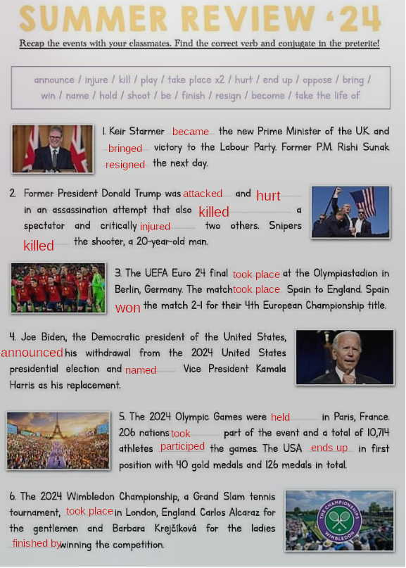

English
Thursday, 5th September 2024
Today's quote
Quote
Success is not final, failure is not fatal, it is the courage to continue that counts
Winston Churchill
Summer Review - 24

About 2: I think it was pretty funny because in fact he really didnt really got hurt, the guards obviously let the attack go and Trump really overplayed (the famous self-growing band-aid).
During the Olympic games Leon Marchand, a french swimmer, won three gold medals and one bronze medal.
Another event: article (creuser)
Neuralink Set to Implant Second Human Patient
Details

Neuralink, Elon Musk's brain-implant company, aims to give humans "cybernetic superpowers" and allow them to control robots with their thoughts, according to the billionaire. Musk recently announced that a second human patient is expected to receive an implant within a week.
Key Things:
- Musk envisions future users of Neuralink’s brain-computer interface controlling prosthetics faster than before they lost their limbs.
- He predicts that Neuralink could treat epilepsy, cure paralysis, and even allow users to control Tesla's humanoid robot, Optimus, with their minds. The robot could be sold as early as next year.
- Neuralink plans to address technical issues experienced with the first patient, including implant detachment. Improvements like deeper wire insertion and reducing air pockets in the skull are in progress.
- Musk's optimistic timelines should be viewed with caution, as experts suggest Neuralink's technology is still experimental, with approvals limited to clinical trials.
Musk also teased a more advanced version of the implant, doubling the number of brain-inserted wires and improving bandwidth. Despite the ambitious vision, commercialization for medical or other uses is still years away.
After the summer. Part 2: How was your summer

| Regular verbs (write the past simple form) | Irregular verbs (write the past simple form) |
|---|---|
| listened/d/ | slept |
| stayed/d/ | ate |
| walked/d/ | done |
| visited | gone |
| watched/d/ | read |
| played/d/ | swam |
| drawed/d/ | rode |
| fought |
I love programming, I think MacOS is good, I know how to center something on a website.
Thursday, 12th September
I didn't eat ice cream (didn't est invariable quelque soit le pronom Ex: Last summer, I rode my mountain-bike and went kiking. I did some sport, however, I din't swim, because i'm not a juge fan of water sports.
Howerver = but Toujour utiliser avec DID et l'infinitif du verbe à la forme négative et interrogative au prétérit; sauf avec BE (was/were). Moi aussi = So did I (affirmative), Neither did I (moi non plus) Moi si = I did, moi non = i didn't
Las summer i swam in the sea. it was really cool, because i looked at dolphins/ i saw dolphins.
What about you ? Write a sentence to talk about your last summer. Give some details.
I programmed 200 hours long, but i didn't played any games (neither did I watched smth else than Netflix)
| Name | activity | yes/no |
|---|---|---|
| Adam | fed his chicken | yes |
| Nolan | played Minecraft | yes |
| Noé | used Windows | no |
I learned Adam had a life. I also learnt

- J'utilise le prétérit quand l'action est passée et terminée
- yesterday=hier; last summer=l'été dernier; two days ago=il y à deux jours.
Tom is wearing Sunglasses. He looks relaxed. He looks joyful and he is wearing a colorful shirt.
Tom took a picture with a Schrek thing, it was approximately 38 degrees Celsius, visited some LA beaches, swam in the pacific ocean, visited hollywood, gone shopping, posted 200 pictures;he feels happy.
Last summer, Tom went to Los Angeles. It was brilliant ! Most days he spent time at the beach and he went swimming in the Pacific Ocean. It was really exciting, because he visited Hollywood and the movie studios. He also walked down Sunset Boulevard and he took photos of the palm trees. He saw Schreck's star on the walk of fame. He posted zillions of photos and he took 23 photos of himself standing next to a palm tree. It was 100 degrees Farenheit (=37.7 degrees Celsius). Finally he bought a shirt which is very colorful.
sailing ballooning
where what when who how how long
2
- when
- how
- how long
- where
- who
- where
3
- When did you go to Australia ?
- How long did you stay there ?
- what did you do ?
- Where did your parents travel ?
- How did you go there ?
- Who did you go with ?
4
- How did you go to Miami ?
- When was the last time your sister read ?
- When was the last time you went to cinema ?
- Who did you play tennis with ?
- How long James watched the TV for ?
- Where did you walked your dog ?
5
- Where did you ate you ice cream yesterday ?
- How much time did you got ?
- How did you go to school ?
- What did you draw ?
- With who have you gone to the cinema ?
- When did you visited this museum ?
One week at miami
| Le sujet ressent une émotion | Le sujet provoque une émotion | |
|---|---|---|
| Interest | interressed | interesting |
| Excite | excited | exciting |
| Amaze | amazed | amazing |
| Fascinate | fascinated | fascinating |
| Bore | bored | boring |
| Terrify | terrified | terrifying |
| Disappoint | disappointed | disappointing |
| Positive adjectives | Negative adjectives |
|---|---|
| exciting | nightmarish |
| peaceful | catastrophic |
| incredible | strange |
| amazing | uninteresting |
| quiet | weird |
| terrific | dull |
| relaxing | odd |
| wonderful | boring |
| fabulous | disastrous |
😁: The view in the Pyrénées was fabulous and incredible.
😠: The internet in the mountains was nightmarish and dull.
👽: It was weird when I had to learn golang on the fly, and the experience was quite odd (well, as the language).
🀧: Hiking in the Pyrénées was peaceful and relaxing.
🥱: 2 weeks next to the beach were boring and uninteresting.
Questions:
- What happened to your arm ?
- Who did you go with ?
- What happened last summer ? < during your vacations
he felt over his backpack. also he did some hitch-hiking.
mindmap
root ("Kyle#39;s vacation")
Rock-climbing
Kayaking
Tripped over his bag
Because of jetlag
He was with his brother in August
Shitty weather
Mountain-bikingThis is a tatoo about the 9/11 events. We see the two towers on the tatoo.
This document is a _. In the background, there's the American flag (called the Stars-spangled banner), there's a man, presumably a firefighter because he's holding a helmet under his left arm. The picture must have been taken in the USA shortly after the twin tower terrorist attack which took place on the September 9th 2001, widely called 9/11 attacjs? The fireman has got a tatoo all over his back which represents the plane and the twin towers in the middle and names on the left. The names must be those of firemen who died in the attacks of 9/11 victims. It must be the names of the members of his fire teammates who died in the rescue of the 9/11 victims. In the bottom left, we can notice/note the hand and the flame of the statue of liberty. The man must have got this tattoo to pay respect to the firman
Look and react. Say all you can about the differences and similarities between these three photos.
In 2001, there was the twin towers before the attacks. After, in 2011, there was two laser aimed at the sky to commemorate the attack. In 2021, A single skyscraper had been built.
The three photos show the New York skyline which is easily recognisable with all its tall skyscraper made of steel.
They were taken every ten years from 2001 to 2021, because twenty three years ago there was a terrorist attack which destroyed the Twin Towers (= The World Trade Center) killing thousands of people.
In 2001 there were two similar skyscrapesr, whereas in 2011 there was a neon light flashing up to the sky where the two towers were missing.
Nowadays, in 2021, there is one tall skyscraper which was built where the two towers were standing.
Passive form: was / were + participe passé du verbe (was taken)
- September 11th is the Patriot Day
- Americans commemorate the 2001 terrorist attack
-
There is a minute of silence at 8:46 am because the atack took place at that time.
-
1wtc: freedom tower 3.8 billion dollars + 8 years build, 541 meters talles in western hemisphere
-
one thousand and six hundred seventy seven
- four thousands square meters
| who | where | what | when | feelings |
|---|---|---|---|---|
| women | new york | when she was going to class | in the morning | horrified |
Who are you ? Someone Can you tell me your name ? No
Where were you when the attack took place ? I was in my house What were you doing ? I was coding
When was it ? When the attack took place How did you feel ? Like nothing happened
1) Let's recap some survivors' testimonies of 9/11
The first speaker is a woman who was living in New York at the time of the events and her dad worked in Manhattan. She remembers she was at school and the teacher asked them to sit down and watch tv.
She was terrified and she couldn't believe what she saw. Her mum was crying as she went back home.
2) Grammar sopts:
- Agir sur quelqu'un avec la proposition infinitive=
Verbe d'action sur quelqu'un (ask / tell / encourage ...) + PRONOM COMPLEMENT (me/you/him/her/us/you/them) + TO + BASE VERVALE
EX: He asked her to sit down. He wants her to watch the news on TV.
- Make so the internet doesn't break
- I would like my mother to stop harassing me on grades (not really true, but used to be)
Exercices prétérit
2
- that he watched the TV when you called
- That yo were tirerd yesterday when your friends came
- that your mom met your professor in the supermarket
3
- What have you saw at Marks&Spencer's this morning ?
- Why didn't you bough that tee-shirt ?
- When did you went to China ?
- Where did youu went after the cinema ?
- Where did you met your boss ?
4
2) Emploi du Past Continuous (or progressive) (was/were ing)
- Le Past Continuous s'emploie pour indiquer qu'une action était en cours à un moment du passé. Il se traduit généralement par l'imparfait en français:
"What were you doing at eight o'clock yesterday evening?" "I was watching TV." "Que faisiez-vous hier soir à huit heures ?" "He regardais la télé".
- Il s'emploie fréquement en contraste avec le prétérit simple. Le prétérit continu désigne alors une action qui était en cours en constraste avec le prétérit simple qui désigne un fait nouveau qui s'est produit:
The new topic will be about the American presidential elections.
This document is a cartoon which was published on July, 22nd 2024 and where we can see the two candidates Kamala Harris and Donald Trump fighting with boxing gloves in a boxing ring. The message might be that this election will be really tense and rough, because both candidates are determined to win this election.
In this chapter we will be able to:
- Learn and understand how the American president is elected.
- Learn about the symbols, the parties and the candidates.
- Take part in a survey: "if i were president..."
- Record an interview to let the school know all about the US elections.
THe presidents first do primaries, then the national election
I understood that people with similar ideas are in the parties and they delivers / make speeches to share their ideas.
I heard the word December... In January, they know who the president will be. Each has a different number of electors.
me, people, questions, street, sleep, mirror, street, sleep, mirror, sleep, goodbye, walk, why
child, blind, sitting, road
7, 6, 5, 2, 1, 3, 4, 8
work, wage, me, bombs, bed
nothing, How, head
_, honestly, same, wage, lonely, dumb, what kind of
The song critiques policies, decisions, and societal issues under George W. Bush's administration.
V1:
Si 1:
Si 2:
Si 3:
Si 4: